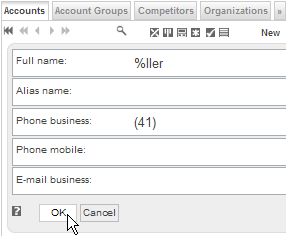
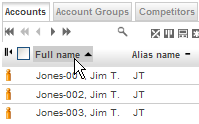

So funktioniert die erweiterte Suche
Mit der Angabe von Operatoren können Sie die Suche besser kontrollieren und erhalten dadurch bessere Antworten. Die folgenden Suchoptionen können jeweils direkt in das Suchfeld resp. die Suchfelder eingegeben werden.
Grundlagen des Suchens
Mittels Klick auf die Lupe wird das Suchformular aktiviert. In die Suchfelder können Sie beliebige Zahlen und/oder Buchstaben sowie Ausdrücke eingeben, z.B. Miller, > 500 or >=
Smith, und anschliessend den Knopf [OK] klicken.

Grundlagen des Sortierens
Sofern nach einem bestimmten Attribut sortiert werden kann, ist der Kopf der entsprechenden Kolonne klickbar. Mittels Klick auf den Tabellenkopf kann die Sortierung entsprechend angepasst werden (aufsteigend - absteigend - keine Sortierung).

Operatoren
Die folgenden Operatoren werden unterstützt (sofern das eingesetzte Datenbanksystem die entsprechende Operation ebenfalls unterstützt):
- like (%), [ist ähnlich wie] - voreingestellte Suche (Default) für Zeichenketten
- not like (!%), [ist nicht ähnlich wie]
- sounds like (*), [tönt ähnlich wie]
- not sounds like (!*) [tönt nicht ähnlich wie]
- equal to (=), [ist gleich wie] - voreingestellte Suche (Default) für boolesche Werte, Zahlen und Codes
- not equal to (<>, !=) [ist nicht gleich wie]
- less than (<) [ist kleiner als]
- less than or equal to (<=) [ist kleiner als oder gleich wie]
- greater than (>) [ist grösser als]
- greater than or equal to (>=) [ist grösser als oder gleich wie]
"UND" Suchen
Um Objekte zu finden, die gleichzeitig mehr als eine Bedingung erfüllen, können Bedingungen mit dem Zeichen & verknüpft werden. Um zum Beispiel Objekte mit Werten zwischen 500 und 1000 zu finden (d.h. grösser als 500 und kleiner als 1000), wird in das Suchfeld folgendes eingegeben: >500 & <1000
"ODER" Suchen
Um Objekte zu finden, die entweder den Wert A oder den Wert B enthalten, werden die beiden Werte mit einem Strichpunkt ; getrennt. Um zum Beispiel Kontakte mit dem Namen 'Meier' ODER 'Müller' zu finden, wird in das Suchfeld folgendes eingegeben: Meier; Müller
Suchen kombinieren
Suchen können fast ohne Einschränkungen kombiniert werde. Um zum Beispiel Objekte mit einem Wert kleiner als 1000, aber verschieden von 500 und verschieden von 600 zu finden, geben Sie folgendes ein in das Suchfeld: <>500; 600 & <1000
Kombinierte Suchen werden nach den folgenden Regeln angewendet::
- searchExpr ::= filterValue { & filterValue }
(--> string tokenizer with & as separator)
- filterValue ::= [operator] value { ; value }
(--> string tokenizer with ; as separator)
Suche mit Platzhalter (Wildcard)
Gewisse Datenbanken unterstützen die Suche mit Platzhaltern. Um z.B. alle Kontakte zu finden, deren Name 'ller' enthält, geben Sie folgendes ein in das Suchfeld: %ller
ACHTUNG: Suchbefehle mit Platzhalter können sehr lange dauern, wenn die DB nicht optimiert ist (full table scans)!